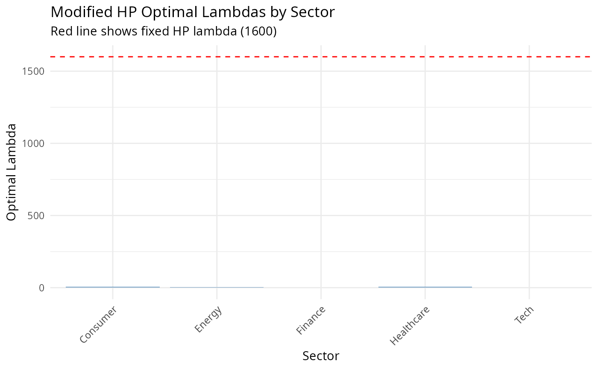

Compare HP and Modified HP filters across multiple time series. Useful for panel data analysis and method validation.
Usage
batch_compare(X, frequency = c("quarterly", "annual"), max_lambda = 100000L)Value
A data.table with comparison metrics for each series:
- series
Series identifier
- hp_lambda
Lambda used for HP filter (1600 or 100)
- mhp_lambda
Optimal lambda from Modified HP
- hp_cycle_sd
Cycle standard deviation (HP)
- mhp_cycle_sd
Cycle standard deviation (Modified HP)
- sd_diff
Difference in cycle SD (MHP - HP)
- hp_ar1
Cycle AR(1) coefficient (HP)
- mhp_ar1
Cycle AR(1) coefficient (Modified HP)
- ar1_diff
Difference in AR(1) (MHP - HP)
- relative_sd
mhp_cycle_sd / hp_cycle_sd
Details
For each series in X, this function: 1. Applies standard HP filter with frequency-appropriate lambda 2. Applies Modified HP filter with GCV optimization 3. Calculates comparison statistics on cyclical components
The comparison helps identify: - Series where Modified HP substantially changes cycle properties - Optimal lambdas across different types of series - Relative performance of automatic vs fixed smoothing
References
Choudhary, M.A., Hanif, M.N., & Iqbal, J. (2014). On smoothing macroeconomic time series using the modified HP filter. Applied Economics, 46(19), 2205-2214.
Examples
# Example 1: Country GDP comparison
set.seed(101)
n <- 80
countries <- c("USA", "UK", "Japan", "Germany", "France", "Italy", "Canada", "Australia")
gdp_data <- sapply(countries, function(ctry) {
# Varying volatility and persistence
vol <- runif(1, 0.5, 2.5)
persist <- runif(1, 0.6, 0.95)
trend <- cumsum(rnorm(n, 0.5, 0.3))
cycle <- arima.sim(list(ar = persist), n, sd = vol)
trend + cycle
})
results <- batch_compare(gdp_data, frequency = "quarterly", max_lambda = 10000)
print(results)
#> series hp_lambda mhp_lambda hp_cycle_sd mhp_cycle_sd sd_diff
#> <char> <num> <int> <num> <num> <num>
#> 1: USA 1600 1317 1.4234427 1.4087969 -0.014645761
#> 2: UK 1600 6923 2.2501287 2.3141371 0.064008449
#> 3: Japan 1600 811 0.8679768 0.8203508 -0.047626003
#> 4: Germany 1600 688 0.7904605 0.7248391 -0.065621379
#> 5: France 1600 1702 2.5930919 2.6000972 0.007005289
#> 6: Italy 1600 637 2.9063951 2.6832130 -0.223182177
#> 7: Canada 1600 2408 1.2925740 1.3098183 0.017244216
#> 8: Australia 1600 1368 2.3354516 2.3167453 -0.018706327
#> hp_ar1 mhp_ar1 ar1_diff relative_sd
#> <num> <num> <num> <num>
#> 1: 0.4634548 0.4536856 -0.009769214 0.9897110
#> 2: 0.4198404 0.4488474 0.029006967 1.0284466
#> 3: 0.6439636 0.6064673 -0.037496385 0.9451299
#> 4: 0.5337024 0.4488174 -0.084884984 0.9169834
#> 5: 0.5734333 0.5755733 0.002140053 1.0027015
#> 6: 0.6713875 0.6145662 -0.056821328 0.9232100
#> 7: 0.4037357 0.4199658 0.016230111 1.0133410
#> 8: 0.3748145 0.3661056 -0.008708860 0.9919903
# Example 2: Sectoral analysis with visualization
set.seed(2024)
n_time <- 100
sectors <- c("Tech", "Finance", "Energy", "Healthcare", "Consumer")
sector_returns <- matrix(rnorm(n_time * length(sectors)), nrow = n_time)
# Add sector-specific characteristics
for (i in 1:length(sectors)) {
drift <- runif(1, -0.1, 0.3)
volatility <- runif(1, 0.5, 2.0)
sector_returns[, i] <- cumsum(rnorm(n_time, mean = drift / 100, sd = volatility / 100)) +
runif(1, 0.5, 2) * sin(2 * pi * (1:n_time) / (20 + i * 3))
}
colnames(sector_returns) <- sectors
sector_comparison <- batch_compare(sector_returns, frequency = "quarterly", max_lambda = 5000)
if (require(ggplot2)) {
# Plot lambda comparison
lambda_plot <- ggplot2::ggplot(
sector_comparison,
ggplot2::aes(x = series, y = mhp_lambda)
) +
ggplot2::geom_col(fill = "steelblue", alpha = 0.7) +
ggplot2::geom_hline(yintercept = 1600, linetype = "dashed", color = "red") +
ggplot2::labs(
title = "Modified HP Optimal Lambdas by Sector",
subtitle = "Red line shows fixed HP lambda (1600)",
x = "Sector", y = "Optimal Lambda"
) +
ggplot2::theme_minimal() +
ggplot2::theme(axis.text.x = ggplot2::element_text(angle = 45, hjust = 1))
print(lambda_plot)
}
